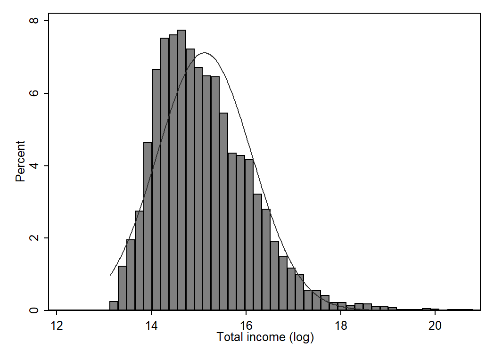
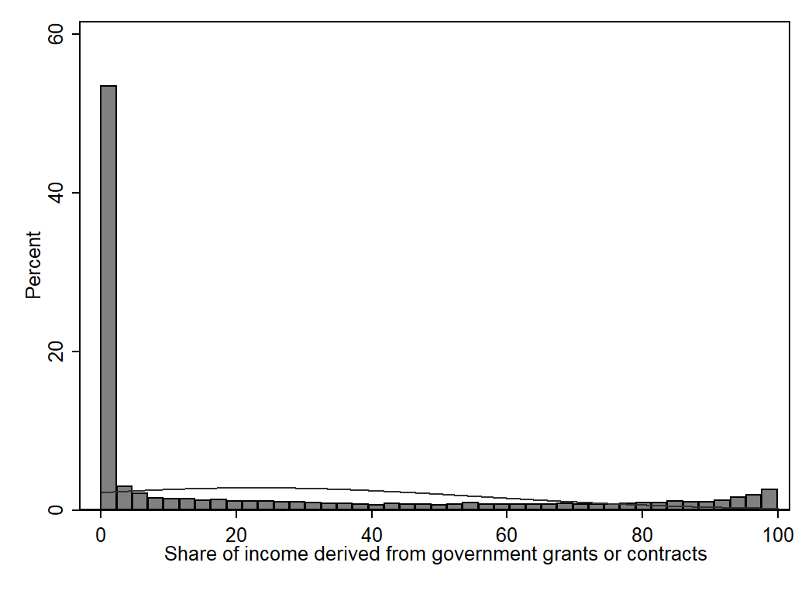

Panel Data Analysis II¶
In this section we estimate our first set of statistical models using panel data: Pooled OLS and Between Effects. We show some examples of how to estimate and interpret these models, and reflect on the conditions under which the models are appropriate.
What we can relax about¶
In the sessions demonstrating how to quantitatively analyse panel data, we will cast aside the following concerns:
Missing data
Weights
Attrition
Multicollinearity
All of these issues impinge on the estimation of panel data models but are not necessary to address for the purposes of learning about said models. We encourage you to consult the reading list for suggestions of resources that cover these topics.
Defining our statistical model¶
Now we arrive at the interesting bit: estimating statistical models.
Let’s return to our panel data on charities and define a statistical model for predicting a charity’s annual gross income as a function of its age, the scale of its charitable activities, where it is located, what type of charity it is, and the number of sources of income it has, and the share of its income provided by government.
Where:
\(\text{y}_{it}\) is log income for charity i at time t
\(\beta_0\) is the constant term, which is our prediction for log income when the values of all other variables in the model are set to 0
\(\text{x}_{1it}\) captures the age of charity i at time t, and \(\beta_1\) is the effect of this variable on the outcome
\(\text{x}_{2i}\) is a dummy variable identifying charities that operate at a local level
\(\text{x}_{3i}\) is a dummy variable identifying charities registered in Westminster
\(\text{x}_{4i}\) is a dummy variable identifying general charities
\(\text{x}_{5it}\) captures the number of sources of income for charity i at time t
\(\text{x}_{6it}\) captures the share its income charity i derives from government sources at time t
\(\epsilon_{it}\) captures the residual for charity i at time t (\(\text{y}_{it} - \hat{y}_{it}\))
Understanding sources of variation¶
Remember to keep in mind the two sources of variation that exist in panel data (Gould, n.d.):
Cross-section information on differences between units
Time series information on differences over time within units
Data exploration¶
Let’s spend a little bit of time exploring the key variables in our statistical model.
use "../data/charity-panel-analysis-2020-09-10.dta", clear
(Contains annual accounts of charities in E&W for financial years 2006-2017)


sum orgage, detail
Age of charity - in years
-------------------------------------------------------------
Percentiles Smallest
1% 4 0
5% 7 1
10% 10 1 Obs 23,826
25% 16 1 Sum of Wgt. 23,826
50% 27 Mean 39.20129
Largest Std. Dev. 42.4661
75% 48 496
90% 82 497 Variance 1803.369
95% 112 498 Skewness 4.595531
99% 180 499 Kurtosis 37.17673
sum nsources, detail
Number of income sources where income >= £1,000
-------------------------------------------------------------
Percentiles Smallest
1% 1 0
5% 2 0
10% 2 1 Obs 23,826
25% 3 1 Sum of Wgt. 23,826
50% 4 Mean 3.806724
Largest Std. Dev. 1.24789
75% 5 6
90% 5 6 Variance 1.557228
95% 6 6 Skewness -.1130695
99% 6 6 Kurtosis 2.425233
tab1 localc socser
-> tabulation of localc
Local |
charity | Freq. Percent Cum.
------------+-----------------------------------
0 | 8,756 36.75 36.75
1 | 15,070 63.25 100.00
------------+-----------------------------------
Total | 23,826 100.00
-> tabulation of socser
Social |
service |
charity | Freq. Percent Cum.
------------+-----------------------------------
0 | 20,449 85.83 85.83
1 | 3,377 14.17 100.00
------------+-----------------------------------
Total | 23,826 100.00
Pooled OLS Model¶
The starting point for any statistical modelling of panel data is to estimate a Pooled OLS model (fancy way of saying linear regression).
The observations are “pooled”, which just means we ignore the nested nature of panel data. In other words we assume that each observation (i.e., row within a long format data set) is independent of other observations (Gayle and Lambert, 2018).
Fundamental problem of pooling observations (Gayle & Lambert, 2018, p. 58):
The model does not recognise that there are multiple contributions of data from the same individuals, and therefore, it estimates results as if there are many individuals who shared the same characteristics. This impacts upon the estimate of measures such as variances and standard errors.
regress linc orgage localc west genchar nsources govern_share
est store pols
Source | SS df MS Number of obs = 23,826
-------------+---------------------------------- F(6, 23819) = 410.54
Model | 2225.8864 6 370.981066 Prob > F = 0.0000
Residual | 21523.6961 23,819 .903635591 R-squared = 0.0937
-------------+---------------------------------- Adj R-squared = 0.0935
Total | 23749.5825 23,825 .996834524 Root MSE = .9506
------------------------------------------------------------------------------
linc | Coef. Std. Err. t P>|t| [95% Conf. Interval]
-------------+----------------------------------------------------------------
orgage | .0036028 .00015 24.01 0.000 .0033087 .0038969
localc | -.3302434 .0130224 -25.36 0.000 -.3557682 -.3047187
west | .1121865 .0253139 4.43 0.000 .0625697 .1618033
genchar | -.3170303 .0139082 -22.79 0.000 -.3442913 -.2897693
nsources | .1053884 .0050963 20.68 0.000 .0953993 .1153774
govern_share | .000644 .0002035 3.16 0.002 .0002451 .0010429
_cons | 14.96317 .0236406 632.94 0.000 14.91683 15.00951
------------------------------------------------------------------------------
Conditions where Pooled OLS is suitable¶
Pooled OLS can produce consistent estimates of the explanatory variables if:
The model is correctly specified
The explanatory variables are uncorrelated with the error term (Cameron and Trivedi, 2010)
TASK: Do you think our statistical model is correctly specified, and there is no correlation between error term and explanatory variables?
In our statistical model of charity income, it is unlikely that the interpretation of the coefficients would change drastically if we addressed the under-estimation of the standard errors (the sample size is very large).
We’ll cover the various tests and checks we can perform to examine whether Pooled OLS model violates the independence of errors assumption in a later section.
Between Effects Model¶
Once again estimate a cross-sectional model (Pooled OLS). However this time we transform the data so that there is one observation per unit. As a result we end up modelling the mean of Y on the mean of our X variables.
xtreg linc orgage localc west genchar nsources govern_share, be
est store beff
Between regression (regression on group means) Number of obs = 23,826
Group variable: regno Number of groups = 2,166
R-sq: Obs per group:
within = 0.0063 min = 11
between = 0.1042 avg = 11.0
overall = 0.0925 max = 11
F(6,2159) = 41.86
sd(u_i + avg(e_i.))= .9109813 Prob > F = 0.0000
------------------------------------------------------------------------------
linc | Coef. Std. Err. t P>|t| [95% Conf. Interval]
-------------+----------------------------------------------------------------
orgage | .0035048 .0004791 7.32 0.000 .0025652 .0044443
localc | -.3282906 .0414364 -7.92 0.000 -.40955 -.2470312
west | .1167392 .0805284 1.45 0.147 -.041182 .2746604
genchar | -.3210918 .0449127 -7.15 0.000 -.4091685 -.233015
nsources | .1384596 .0193749 7.15 0.000 .1004643 .1764549
govern_share | .0002749 .0007478 0.37 0.713 -.0011916 .0017415
_cons | 14.85058 .0835091 177.83 0.000 14.68681 15.01435
------------------------------------------------------------------------------
Estimating a Between Effects model is equivalent to collapsing the data and estimating your regression model on the resulting observations:
preserve
collapse (mean) linc orgage localc west genchar nsources govern_share, by(regno)
regress linc orgage localc west genchar nsources govern_share
est store coll
restore
Source | SS df MS Number of obs = 2,166
-------------+---------------------------------- F(6, 2159) = 41.86
Model | 208.427331 6 34.7378885 Prob > F = 0.0000
Residual | 1791.72593 2,159 .829886952 R-squared = 0.1042
-------------+---------------------------------- Adj R-squared = 0.1017
Total | 2000.15326 2,165 .923858319 Root MSE = .91098
------------------------------------------------------------------------------
linc | Coef. Std. Err. t P>|t| [95% Conf. Interval]
-------------+----------------------------------------------------------------
orgage | .0035048 .0004791 7.32 0.000 .0025652 .0044443
localc | -.3282906 .0414364 -7.92 0.000 -.40955 -.2470313
west | .1167393 .0805284 1.45 0.147 -.0411819 .2746605
genchar | -.3210918 .0449127 -7.15 0.000 -.4091685 -.233015
nsources | .1384596 .0193749 7.15 0.000 .1004643 .176455
govern_share | .0002749 .0007478 0.37 0.713 -.0011916 .0017415
_cons | 14.85058 .0835091 177.83 0.000 14.68681 15.01435
------------------------------------------------------------------------------
est table pols beff coll
-----------------------------------------------------
Variable | pols beff coll
-------------+---------------------------------------
orgage | .00360282 .00350476 .00350476
localc | -.33024344 -.3282906 -.32829062
west | .11218649 .11673923 .11673928
genchar | -.31703032 -.32109178 -.32109176
nsources | .10538836 .1384596 .13845961
govern_share | .00064402 .00027494 .00027494
_cons | 14.963168 14.850581 14.850581
-----------------------------------------------------
Benefits of Between Effects¶
Sidesteps the problem of interdependence of observations in the original panel data.
Smooths the effect of anomalous time periods (e.g., excess deaths calculation).
Controls for omitted variables that change over time but are constant between units (e.g., national policies).
Limitations of Between Effects¶
What might the limitations of this approach be?
Cannot estimate observed variables that change over time but are constant between units (e.g., national policies).
Discard a lot of information by examining mean outcomes and inputs e.g., change over time.
Cannot control for unobserved explanatory variables that are constant within but vary between units e.g., organisational culture.
The limitations of the Between Effects model far outweigh the benefits in most cases, and thus it is not widely used in practice (Mehmetoglu and Jakobsen, 2016). However it plays a crucial role in the estimation of another panel data model — Random Effects model — and thus it is important to understand how it works and what it offers.
Summary¶
Both the Pooled OLS and Between Effects models provide useful information on the association between an outcome Y and a set of explanatory variables X.
However both can be suboptimal from a substantive perspective (no change over time).
More concerningly, they offer no ability to control for residual heterogeniety in the form of unobserved time-invariant explanatory variables.